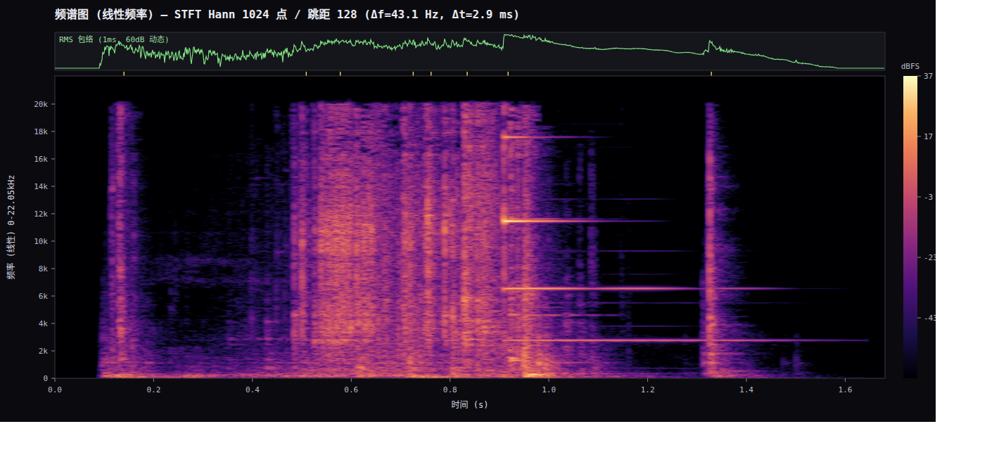
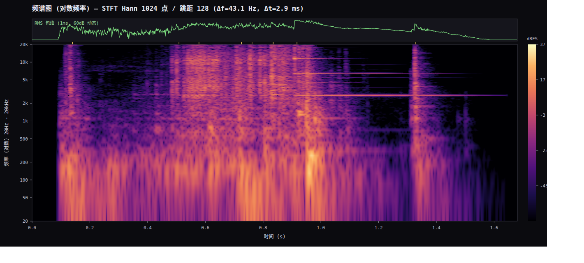
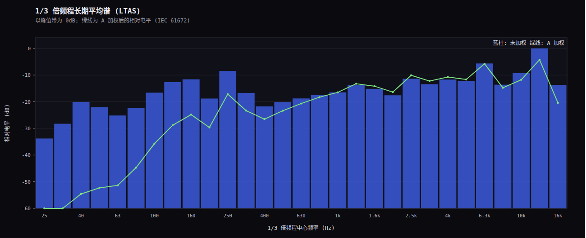
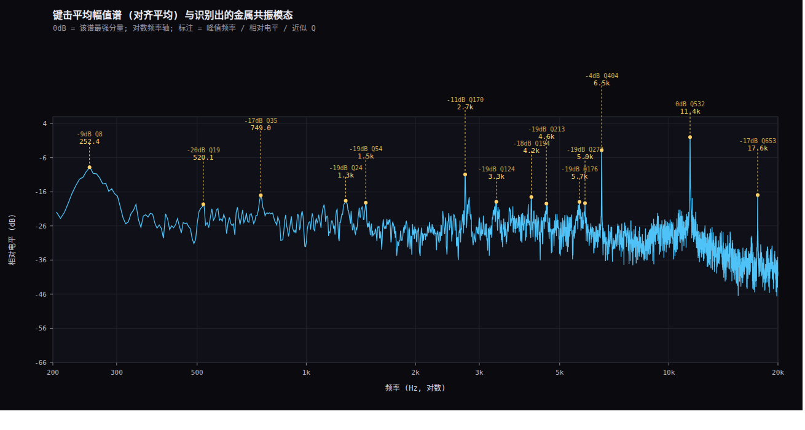

reference_original.mp3（44.1 kHz / 立体声 / 1.695 s）；
分析代码：analysis/spectral_report.py；完整结论见 SPECTRAL_REPORT.md



| 项目 | 数值 |
|---|---|
| 峰值 / RMS（中置） | −6.40 / −27.51 dBFS |
| 波峰因数 | 21.1 dB |
| 功率占比 >6 kHz | 63.2 % |
| 谱重心 | 7.4 kHz |
| 击键数 / IOI 中位 | 8 / 83 ms |
| 起振 10–90% | 0.34 – 6.19 ms |
| 2–9 kHz 段 −20 dB 衰减 | 293 ms |
| L/R 相关度（全曲） | 0.193 |
| A 加权相对未加权 | −2.32 dB |
python3 analysis/spectral_report.py + bash analysis/render_svg.sh。